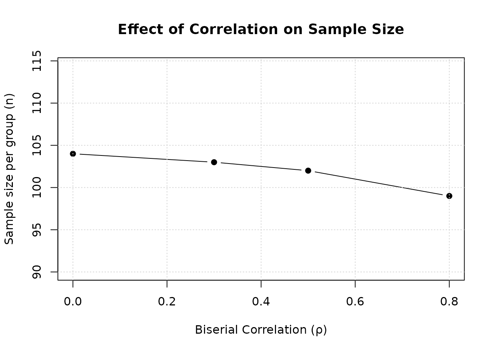

Mixed Continuous and Binary Co-Primary Endpoints
Source:vignettes/mixed-continuous-binary.Rmd
mixed-continuous-binary.RmdOverview
This vignette demonstrates sample size calculation for clinical trials with two co-primary endpoints where one is continuous and one is binary. The methodology is based on Sozu et al. (2012).
Important note on notation: In Sozu et al. (2012), the allocation ratio is defined as (control/treatment), which is the inverse of the notation used in other papers in this package where (treatment/control). Therefore, . In this vignette, we follow the notation from the original paper using to maintain consistency with the published formulas.
Background
Clinical Context
Mixed continuous and binary co-primary endpoints are common in:
- Rheumatoid arthritis trials: The mean change from baseline in the modified total Sharp score (mTSS) + An ACR50 response (yes/no)
- Chronic kidney disease trials: The mean peak percentage change from baseline serum creatinine over the 72-h period after contrast media administration + The contrast-induced nephropathy (yes/no)
Why Mixed Endpoints?
Combining continuous and binary endpoints provides:
- Comprehensive assessment: Magnitude of change (continuous) + clinical meaningfulness (binary)
- Regulatory relevance: Many guidelines require both types
- Clinical interpretability: Binary endpoints are easier to communicate to patients
Statistical Framework
Model and Assumptions
Consider a two-arm superiority trial with sample sizes (treatment) and (control), with allocation ratio .
For subject in group (: treatment, : control), we observe two outcomes:
Outcome 1 (Continuous) ():
where is the population mean in group and is the common variance across groups.
Outcome 2 (Binary) ():
where if subject in group responds successfully, and 0 otherwise. Let denotes the true success probability in group for endpoint .
Correlation Structure: Biserial Correlation
The correlation between a continuous outcome and a binary outcome requires special consideration. Following Sozu et al. (2012), we assume that both outcomes have latent bivariate normal distributions.
Key concept: The binary outcome is assumed to arise from dichotomizing a latent continuous variable (i.e., ):
where is a threshold (cut-off point) such that .
Biserial correlation: Assuming that follow a bivariate normal distribution, the biserial correlation measures the correlation between the continuous outcome and the latent continuous variable underlying the binary outcome.
For the detailed formula relating the biserial correlation to the correlation between test statistics, see Sozu et al. (2012), equation (1) in the Supporting Information.
Hypothesis Testing
We test superiority of treatment over control for both endpoints:
For continuous endpoint (1):
For binary endpoint (2):
Co-primary endpoints (intersection-union test):
Reject at level if and only if both and are rejected at level .
Test Statistics
Continuous endpoint (Equation 2 in Sozu et al., 2012):
where and are the sample means. When is unknown, use the pooled sample standard deviation.
Binary endpoint - Asymptotic Normal (AN) method (Equation 3 in Sozu et al., 2012):
where:
- and are the sample proportions
- is the pooled proportion
Other test methods: Sozu et al. (2012) also present:
- ANc: Asymptotic normal with continuity correction (equation 5)
- AS: Arcsine transformation without continuity correction (equation 6)
- ASc: Arcsine transformation with continuity correction (equation 7)
- Fisher: Fisher’s exact test (simulation-based)
See the paper for detailed formulas. The twoCoprimary
package implements all five methods. Note that Fisher’s exact test does
not have a closed-form sample size formula and requires simulation-based
power calculation.
Joint Distribution and Power Calculation
Under , the test statistics asymptotically follow a bivariate normal distribution. The overall power is given by (Equation 4 in Sozu et al., 2012):
where with being the treatment effect, and:
For continuous endpoint ():
where is the effect size for the endpoint 1.
For binary endpoint (, AN method) (Equation 5 in Sozu et al., 2012):
The vector is approximately distributed as a standardized bivariate normal distribution , where is the correlation between the test statistics.
Correlation between test statistics: For the mixed continuous and binary case, the correlation between and depends on the biserial correlation between outcomes. The explicit formula involves the standard normal density function and success probabilities. See equation (1) in the Supporting Information of Sozu et al. (2012) for details:
where .
Sample Size Determination
The sample size is determined by solving the power equation numerically. For a given allocation ratio , target power , and significance level , we find the smallest such that the overall power equals or exceeds .
Computational approach:
- Calculate initial sample size based on single-endpoint formulas
- Compute the correlation between test statistics using the biserial correlation
- Calculate joint power using the bivariate normal distribution
- Iterate until target power is achieved
Fisher’s exact test: For Fisher’s exact test, the power calculation is simulation-based due to the discrete nature of the test statistic. The sample size calculation uses sequential search starting from the AN method’s sample size as an initial value.
Replicating Sozu et al. (2012) Table 2
Table 2 from Sozu et al. (2012) shows sample sizes for the PREMIER study scenario with different standard deviations and correlations.
# Recreate Sozu et al. (2012) Table 2
library(dplyr)
library(tidyr)
param_grid_mixed_cb_ss <- expand.grid(
delta = 4.4,
sd = c(19, 20, 21, 22),
p1 = 0.59,
p2 = 0.46
)
result_mixed_cb_ss <- design_table(
param_grid = param_grid_mixed_cb_ss,
rho_values = c(0, 0.3, 0.5, 0.8),
r = 1,
alpha = 0.025,
beta = 0.2,
endpoint_type = "mixed_cont_binary",
Test = "AN"
) %>%
mutate_at(vars(starts_with("rho_")), ~ . / 2)
kable(result_mixed_cb_ss,
caption = "Table 2: Sample Size per Group (n) for PREMIER Study Scenario (delta1 = 4.4, p1 = 0.59, p2 = 0.46, α = 0.025, 1-β = 0.80)",
digits = 2,
col.names = c("delta", "σ", "p1", "p2", "ρ=0.0", "ρ=0.3", "ρ=0.5", "ρ=0.8"))| delta | σ | p1 | p2 | ρ=0.0 | ρ=0.3 | ρ=0.5 | ρ=0.8 |
|---|---|---|---|---|---|---|---|
| 4.4 | 19 | 0.59 | 0.46 | 346 | 340 | 334 | 323 |
| 4.4 | 20 | 0.59 | 0.46 | 369 | 363 | 358 | 347 |
| 4.4 | 21 | 0.59 | 0.46 | 394 | 389 | 384 | 374 |
| 4.4 | 22 | 0.59 | 0.46 | 422 | 417 | 413 | 404 |
Interpretation: This table shows that as the standard deviation increases, the required sample size increases. The correlation has a modest effect on sample size reduction (approximately 5-7% reduction at ).
Replicating Sozu et al. (2012) Supporting Information Table 5
Table 5 from the Supporting Information shows sample sizes for scenarios with higher success probabilities and different test methods.
# Recreate Supporting Information Table 5
param_grid_mixed_cb_ss2 <- tibble(
delta = c(0.235, 0.397, 0.521, 0.190, 0.335, 0.457),
sd = 1,
p1 = c(rep(0.99, 3), rep(0.95, 3)),
p2 = c(seq(0.95, 0.85, length.out = 3), seq(0.90, 0.80, length.out = 3))
)
result_mixed_cb_ss2 <- do.call(
bind_rows,
lapply(c("ANc", "ASc"), function(test) {
design_table(
param_grid = param_grid_mixed_cb_ss2,
rho_values = c(0, 0.3, 0.5, 0.8),
r = 1,
alpha = 0.025,
beta = 0.2,
endpoint_type = "mixed_cont_binary",
Test = test
) %>%
mutate_at(vars(starts_with("rho_")), ~ . / 2) %>%
mutate(Test = test)
})
) %>%
arrange(desc(p1), delta) %>%
select(delta, sd, p1, p2, Test, everything())
# Display for ANc
result_anc <- result_mixed_cb_ss2 %>%
filter(Test == "ANc") %>%
select(-Test)
kable(result_anc,
caption = "Table 5 (Part A): Sample Size per Group (n) with Continuity Correction (ANc) (σ = 1, α = 0.025, 1-β = 0.80)^a^",
digits = 3,
col.names = c("delta", "σ", "p1", "p2", "ρ=0.0", "ρ=0.3", "ρ=0.5", "ρ=0.8"))| delta | σ | p1 | p2 | ρ=0.0 | ρ=0.3 | ρ=0.5 | ρ=0.8 |
|---|---|---|---|---|---|---|---|
| 0.235 | 1 | 0.99 | 0.95 | 400 | 397 | 395 | 391 |
| 0.397 | 1 | 0.99 | 0.90 | 143 | 142 | 141 | 139 |
| 0.521 | 1 | 0.99 | 0.85 | 84 | 83 | 82 | 81 |
| 0.190 | 1 | 0.95 | 0.90 | 592 | 585 | 579 | 569 |
| 0.335 | 1 | 0.95 | 0.85 | 195 | 192 | 190 | 187 |
| 0.457 | 1 | 0.95 | 0.80 | 106 | 105 | 104 | 102 |
# Display for ASc
result_asc <- result_mixed_cb_ss2 %>%
filter(Test == "ASc") %>%
select(-Test)
kable(result_asc,
caption = "Table 5 (Part B): Sample Size per Group (n) with Arcsine and Continuity Correction (ASc) (σ = 1, α = 0.025, 1-β = 0.80)^a^",
digits = 3,
col.names = c("delta", "σ", "p1", "p2", "ρ=0.0", "ρ=0.3", "ρ=0.5", "ρ=0.8"))| delta | σ | p1 | p2 | ρ=0.0 | ρ=0.3 | ρ=0.5 | ρ=0.8 |
|---|---|---|---|---|---|---|---|
| 0.235 | 1 | 0.99 | 0.95 | 376 | 373 | 371 | 367 |
| 0.397 | 1 | 0.99 | 0.90 | 129 | 128 | 127 | 125 |
| 0.521 | 1 | 0.99 | 0.85 | 74 | 74 | 73 | 72 |
| 0.190 | 1 | 0.95 | 0.90 | 585 | 578 | 572 | 562 |
| 0.335 | 1 | 0.95 | 0.85 | 189 | 187 | 185 | 182 |
| 0.457 | 1 | 0.95 | 0.80 | 102 | 101 | 100 | 98 |
a Some values may differ slightly from the Supporting Information Table 5 in Sozu et al. (2012) due to numerical differences in computing the bivariate normal cumulative distribution function between SAS and R implementations.
Key findings:
- ANc and ASc give similar sample sizes
- Correlation effect is modest for these scenarios
- Higher success probabilities () generally require larger sample sizes when the effect size is small
Basic Usage Examples
Example 1: Balanced Design
Calculate sample size for a balanced design with moderate effect sizes:
# Balanced design: nT = nC (i.e., r = 1, which corresponds to kappa = 1)
result_balanced <- ss2MixedContinuousBinary(
delta = 0.5, # Standardized effect for continuous endpoint
sd = 1, # Standard deviation
p1 = 0.7, # Success prob in treatment group
p2 = 0.5, # Success prob in control group
rho = 0.5, # Biserial correlation
r = 1, # Balanced allocation (r = nT/nC = 1)
alpha = 0.025,
beta = 0.2,
Test = "AN"
)
print(result_balanced)
#>
#> Sample size calculation for mixed continuous and binary co-primary endpoints
#>
#> n1 = 102
#> n2 = 102
#> N = 204
#> delta = 0.5
#> sd = 1
#> p = 0.7, 0.5
#> rho = 0.5
#> allocation = 1
#> alpha = 0.025
#> beta = 0.2
#> Test = ANNote: In the function, . Thus corresponds to balanced allocation (), which is equivalent to in Sozu et al. (2012).
Example 2: Effect of Correlation
Demonstrate how biserial correlation affects sample size:
# Fixed effect sizes
delta <- 0.5
p1 <- 0.7
p2 <- 0.5
# Range of correlations
rho_values <- c(0, 0.3, 0.5, 0.8)
ss_by_rho <- sapply(rho_values, function(rho) {
result <- ss2MixedContinuousBinary(
delta = delta,
sd = 1,
p1 = p1,
p2 = p2,
rho = rho,
r = 1,
alpha = 0.025,
beta = 0.2,
Test = "AN"
)
result$n2
})
result_df <- data.frame(
rho = rho_values,
n_per_group = ss_by_rho,
N_total = ss_by_rho * 2,
reduction_pct = round((1 - ss_by_rho / ss_by_rho[1]) * 100, 1)
)
kable(result_df,
caption = "Effect of Biserial Correlation on Sample Size",
col.names = c("ρ", "n per group", "N total", "Reduction (%)"))| ρ | n per group | N total | Reduction (%) |
|---|---|---|---|
| 0.0 | 104 | 208 | 0.0 |
| 0.3 | 103 | 206 | 1.0 |
| 0.5 | 102 | 204 | 1.9 |
| 0.8 | 99 | 198 | 4.8 |
# Plot
plot(rho_values, ss_by_rho,
type = "b", pch = 19,
xlab = "Biserial Correlation (ρ)",
ylab = "Sample size per group (n)",
main = "Effect of Correlation on Sample Size",
ylim = c(90, max(ss_by_rho) * 1.1))
grid()
Interpretation: Higher positive correlation reduces required sample size. At , sample size is reduced by approximately 5-8% compared to .
Example 3: Comparison of Test Methods
Compare different test methods for the binary endpoint:
# Fixed design parameters
delta <- 0.5
p1 <- 0.7
p2 <- 0.5
rho <- 0.5
test_methods <- c("AN", "ANc", "AS", "ASc")
test_comparison <- lapply(test_methods, function(test_method) {
result <- ss2MixedContinuousBinary(
delta = delta,
sd = 1,
p1 = p1,
p2 = p2,
rho = rho,
r = 1,
alpha = 0.025,
beta = 0.2,
Test = test_method
)
data.frame(
Test_method = test_method,
n_per_group = result$n2,
N_total = result$N
)
})
test_comparison_table <- bind_rows(test_comparison)
kable(test_comparison_table,
caption = "Comparison of Test Methods for Binary Endpoint",
digits = 0,
col.names = c("Test Method", "n per group", "N total"))| Test Method | n per group | N total |
|---|---|---|
| AN | 102 | 204 |
| ANc | 109 | 218 |
| AS | 101 | 202 |
| ASc | 109 | 218 |
Key findings:
- AN (no continuity correction): Similar to AS
- ANc (with continuity correction): Slightly larger (~1-5% increase)
- AS (arcsine): Smallest sample size
- ASc (arcsine with CC): Similar to ANc
Example 4: Unbalanced Allocation
Calculate sample size with 2:1 allocation ratio:
# Balanced design (r = 1, equivalent to kappa = 1)
result_balanced <- ss2MixedContinuousBinary(
delta = 0.5,
sd = 1,
p1 = 0.7,
p2 = 0.5,
rho = 0.5,
r = 1,
alpha = 0.025,
beta = 0.2,
Test = "AN"
)
# Unbalanced design (r = 2, i.e., nT = 2*nC, equivalent to kappa = 0.5)
result_unbalanced <- ss2MixedContinuousBinary(
delta = 0.5,
sd = 1,
p1 = 0.7,
p2 = 0.5,
rho = 0.5,
r = 2,
alpha = 0.025,
beta = 0.2,
Test = "AN"
)
comparison_allocation <- data.frame(
Design = c("Balanced (1:1)", "Unbalanced (2:1)"),
n_treatment = c(result_balanced$n1, result_unbalanced$n1),
n_control = c(result_balanced$n2, result_unbalanced$n2),
N_total = c(result_balanced$N, result_unbalanced$N),
kappa = c(1, 0.5)
)
kable(comparison_allocation,
caption = "Comparison: Balanced vs Unbalanced Allocation",
col.names = c("Design", "nT", "nC", "N total", "κ"))| Design | nT | nC | N total | κ |
|---|---|---|---|---|
| Balanced (1:1) | 102 | 102 | 204 | 1.0 |
| Unbalanced (2:1) | 152 | 76 | 228 | 0.5 |
cat("\nIncrease in total sample size:",
round((result_unbalanced$N - result_balanced$N) / result_balanced$N * 100, 1), "%\n")
#>
#> Increase in total sample size: 11.8 %Note: In the function, , so means , which corresponds to in Sozu et al. (2012) notation.
Power Verification
Verify that calculated sample sizes achieve target power:
# Use result from Example 1
power_result <- power2MixedContinuousBinary(
n1 = result_balanced$n1,
n2 = result_balanced$n2,
delta = 0.5,
sd = 1,
p1 = 0.7,
p2 = 0.5,
rho = 0.5,
alpha = 0.025,
Test = "AN"
)
cat("Target power: 0.80\n")
#> Target power: 0.80
cat("Achieved power (Continuous endpoint):", round(as.numeric(power_result$power1), 4), "\n")
#> Achieved power (Continuous endpoint):
cat("Achieved power (Binary endpoint):", round(as.numeric(power_result$power2), 4), "\n")
#> Achieved power (Binary endpoint):
cat("Achieved power (Co-primary):", round(as.numeric(power_result$powerCoprimary), 4), "\n")
#> Achieved power (Co-primary): 0.8044Practical Recommendations
Design Considerations
Estimating biserial correlation: Use pilot data or historical studies; be conservative if uncertain. Biserial correlation is more challenging to estimate than Pearson correlation.
Latent variable assumption: Ensure the binary endpoint conceptually has an underlying continuous scale (e.g., “improved” means crossing a threshold on a continuous improvement scale).
-
Test method selection:
- AN: Most common, smallest sample size
- ANc: Adds continuity correction for conservatism
- AS: Uses arcsine transformation for variance stabilization
- ASc: Combines arcsine transformation with continuity correction
- Fisher: Provides exact inference but computationally intensive
Balanced allocation: Generally most efficient (, i.e., ) unless practical constraints require otherwise.
Sensitivity analysis: Calculate for range of plausible correlations and effect sizes.
When to Use This Method
Use mixed continuous-binary methods when:
- One endpoint is naturally continuous (e.g., change in test score)
- Other endpoint is naturally binary (e.g., clinical response yes/no)
- Both endpoints are clinically meaningful co-primary endpoints
- Sample sizes are moderate to large ()
Challenges and Considerations
Correlation estimation: Biserial correlation involves a latent variable and is harder to estimate than Pearson correlation
Threshold specification: The dichotomization threshold affects correlation; ensure it’s clinically meaningful
Asymmetric power: Mixed endpoints often have unequal power for the two endpoints; the endpoint with lower power dominates sample size
Asymptotic approximation: Methods rely on asymptotic normality; may not be accurate for very small samples ()